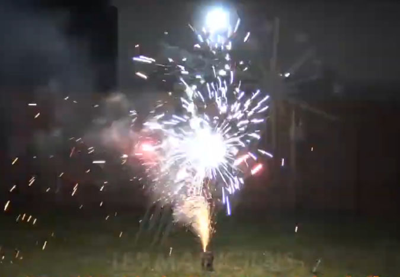
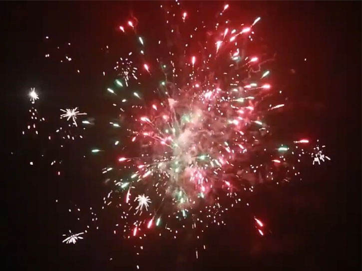

Artifices & pyrotechnie
Le feu peut également prendre une autre dimension grâce aux effets pyrotechniques :
fontaines, volcans, effets scintillants, crépitants,
stroboscopiques ou fumigènes, intégrés à une mise en scène ou utilisés pour accompagner un moment fort de votre événement.
Les articles pyrotechniques utilisés dans le cadre de ces prestations
relèvent exclusivement des catégories F1 à F3 et T1, adaptées aux usages envisagés et ne nécessitant pas de certificat de qualification d’artificier dans le cadre de ces utilisations.
De l’installation d’effets au sol à leur intégration dans une structure
adaptée, jusqu’à la mise en scène d’un final pyrotechnique, chaque prestation est pensée pour s’intégrer au lieu et au déroulement de votre événement.
Artifices montés sur agrès
Installation d’artifices de type volcan ou fontaine sur des agrès, manipulés et mis en mouvement à grande vitesse pour créer un effet visuel et sonore particulièrement intense. Une prestation idéale pour un final explosif, mais qui peut également être intégrée à différents moments d’un spectacle ou d’un événement.

Installation d’artifices et effets pyrotechniques
Installation et mise à feu de différents types d’artifices : volcans, fontaines scintillantes, effets crépitants ou stroboscopiques, fumigènes et autres effets pyrotechniques, installés au sol ou intégrés à une structure adaptée. Une manière de créer une ambiance particulière, de souligner un moment important ou d’apporter une dimension supplémentaire à votre événement.

Mise à feu de feu d’artifice
Mise à feu d’un feu d’artifice conçu pour accompagner et clôturer votre événement. Une solution pour créer un final marquant et lumineux, avec une mise en œuvre adaptée au lieu et au déroulement de votre événement.

Parlons de votre projet pyrotechnique
Chaque événement étant différent, le tarif dépend notamment du lieu, des conditions d’accueil et des options choisies.
Demander un devisRéponse personnalisée et devis gratuit.